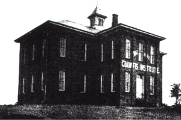
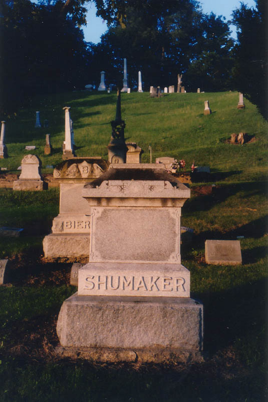
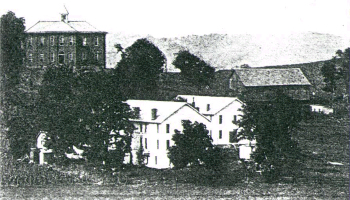
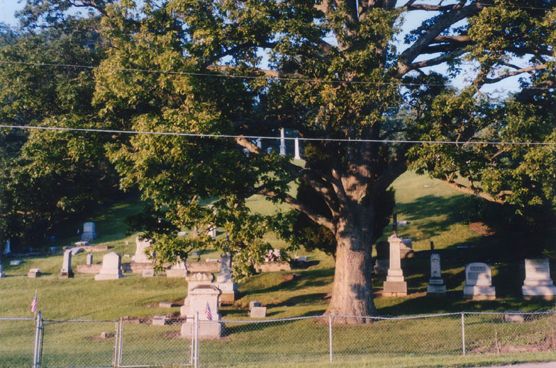
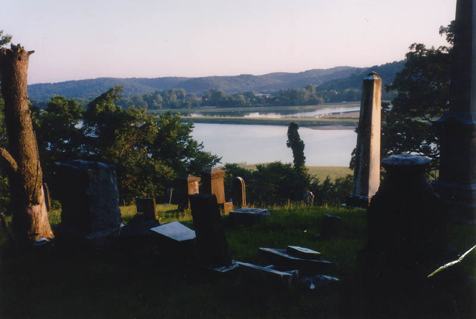
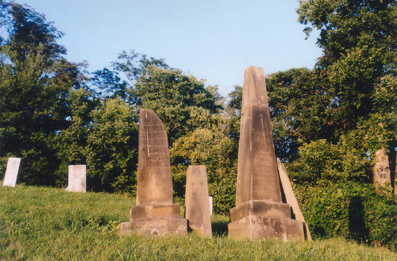
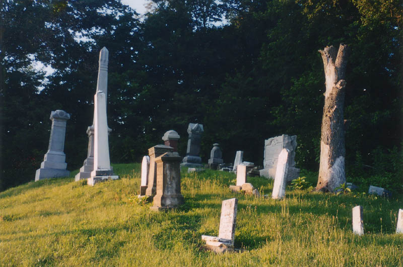
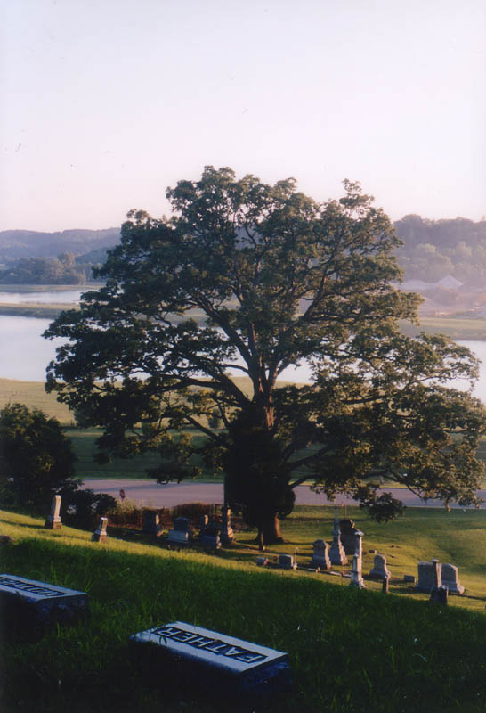

Something about this former public school and teacher's college near Lancaster has caused the most implausible horror stories to be passed down about it for more than a century. Maybe it's the rural location of the austere brick building, which stands at the top of a hill overlooking Sugar Grove Road at Crawfis Road. Maybe it's the faded letters that spell CRAWFIS INSTITUTE between the first- and second-floor windows. Or maybe it's the old Crawfis-Emery Cemetery which takes up the steep front lawn of the place.

Apparently the Crawfis building stood vacant for many years. I saw a picture of it looking very abandoned, and it inspired me to make the trip to see the place in 2001. I reached the top of the winding driveway only to find the place restored, with a couple of brand-new cars in the driveway and playground equipment in the back yard for some family's kids.
I'd be interested to hear whether or not the current residents have had any inexplicable occurrences in their home, because Crawfis is a time-honored ghost legend in Fairfield County on a par with Mudhouse Mansion. The building is said to house any number of ghosts. Some say original residents died there and never left; others say murders took place in the house. A widely-repeated error has cast Crawfis as a psychiatric hospital instead of a school--a different kind of "Institute" altogether.

Here's the true story. John Crawfis, a Fairfield County native from Berne Township, moved to northwest Ohio and made a lot of money in Putnam County. He willed his money to the establishment of two teachers' colleges--one in each of the Ohio counties he'd lived in. The land for the Fairfield County school was chosen between Lancaster and Sugar Grove, and the building atop the hill was built in 1889. For two years it served as the public high school, before finally being established as a teachers' college in 1891. The school added dormitories (the white buildings in the photo above), and the Hocking Valley Railroad added a stop for the college. The Crawfis Institute continued as a college for forty years, until financial problems during the Great Depression caused it to close down in 1931. Berne Union schools used it for a while; in the 40s a local grange rented the buildings. Over time the dormitory buildings were torn down, but the main school building remained.
It's hard to say when and where the ghost stories got started, but they probably weren't told much when the schools were still functioning. The Institute's reputation as a "creepy old building" came later. The stories told about it vary so much that it's hard to believe much about them at all. Many have to do with mental patients who never existed in the first place.

The cemetery, however, has been around for a long time--at least as long as the Institute itself. It climbs the hill in front of the main college building where a family now lives, and at the top it provides a pretty impressive view of the western horizon.

Katydid and I visited the Crawfis-Emery Cemetery with our little dog in August of 2003. We found a number of interesting tombstones as we climbed the brutally steep hill. I wonder how they ever held a funeral or dug a grave on some of these spots.


One of the coolest things at Crawfis is the huge, ancient tree at the foot of the slope, near the front gate of the cemetery. (Can anybody tell me what kind of tree this is?) It was almost certainly there when they still trained teachers at this rural college that almost no one remembers, at a time when our presidents had beards and Civil War veterans were all over the place. Now it's so big that it blocks part of the horizon.

I'd be interested to hear some of the specific ghost stories that are told about Crawfis, so if you know any of them, please drop me a line. Special thanks go out to Katydid, for her always-excellent photgraphy in this section.
Grave Addiction: Crawfis-Emery Cemetery
Lancaster's Attic: Crawfis Institute
Back
forgottenohio@yahoo.com